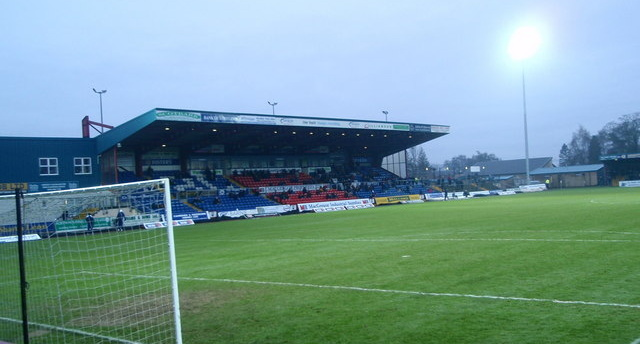

Sobre o Ross County:
O Ross County Football Club √© um clube de futebol da Esc√≥cia, com sede na cidade de Dingwall conhecidos como The Staggies(ü¶å), e fundado em 1929. O clube foi vice campeão da Copa da Esc√≥cia em 2009.
Victoria Park
Os títulos mais importantes ganhos até ao momento.
| Competições | Títulos |
|---|---|
| UEFA Champions League | 0x |
| UEFA Europa League | 0x |
| Scottish Premier League | 0x |
| Scottish Cup | 0x |
| Scottish League Cup | 1x |